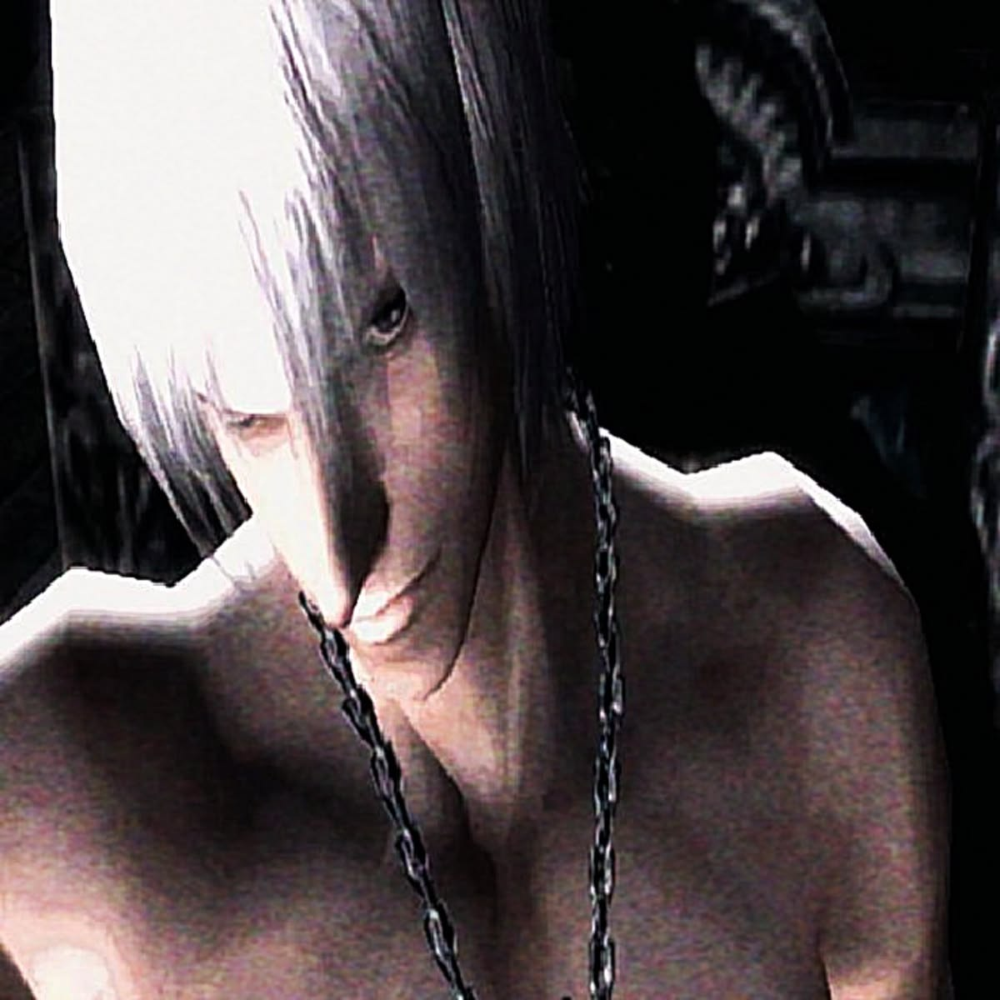
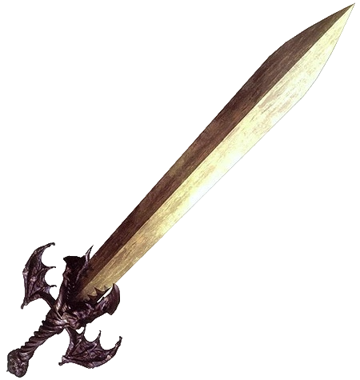
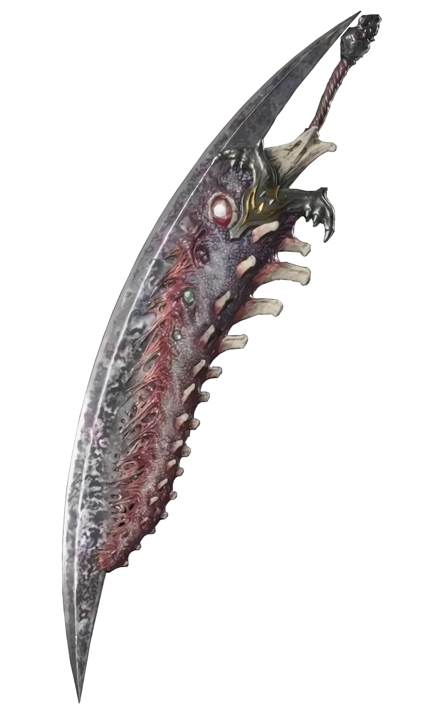
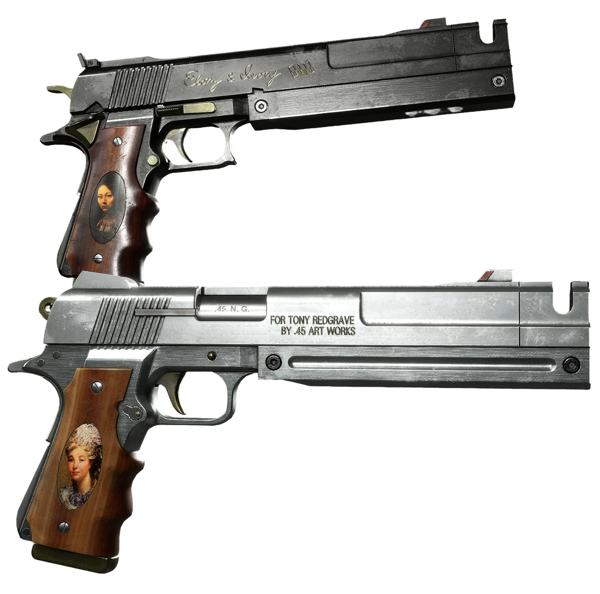
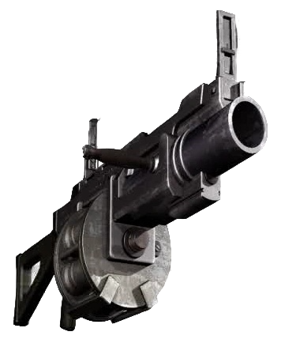
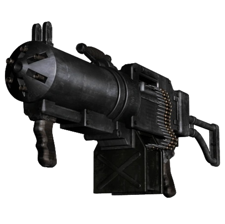
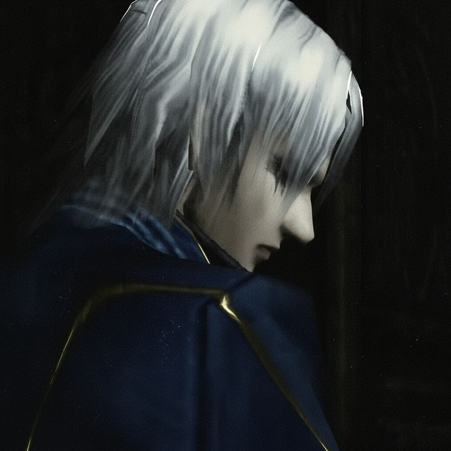
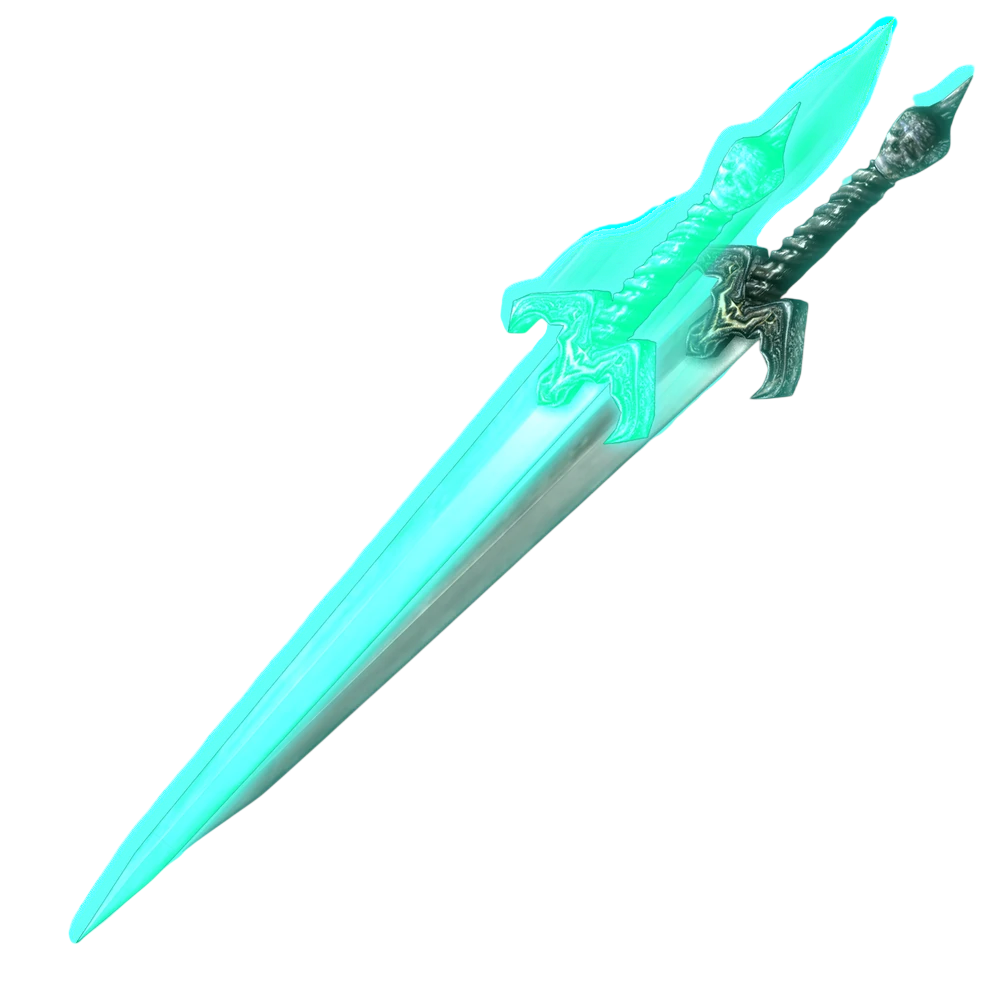
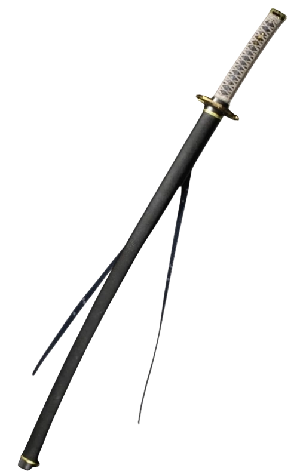
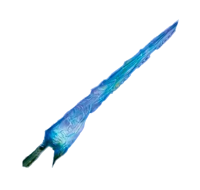

Данте


Аластор - на острове Маллет меч буквально оживает и пронзает Данте насквозь через каменную скульптуру женщины, после чего Данте подчиняет его себе.

Меч Спарды - легендарный меч Спарды. Первое появление было в ДМС 1, Данте использует его против Вергилия.

Эбони и Айвори — это культовые пистолеты Данте, которые он создал сам, поэтому они принадлежат ему с самого начала большинства игр и не требуют внутриигрового получения.

Лежит на скелете солдата в Миссии 8. Если пропустите, пушка перелетит в комнату со статуей прокачки в конце Миссии 9.

Лежит прямо на дне водоема в самом начале Миссии 12. Это единственное огнестрельное оружие в игре, которое стреляет под водой.
Вергилий


Призванные мечи, также известные как Phantom Blades или Mirage Blades — это уникальная магическая способность Вергилия, заменяющая ему огнестрельное оружие.

Ямато — это визитная карточка, главное оружие Вергилия и один из самых культовых мечей в истории видеоигр. В отличие от огромного бродсорда Данте, Ямато представляет собой изящную традиционную японскую катану, обладающую невероятной мистической силой

Меч Нело Анджело — это колоссальное демоническое оружие, созданное владыкой Преисподней Мундусом специально для порабощенного Вергилия. В официальном лоре и внутриигровых файлах у этого клинка нет собственного имени, однако он обладает уникальным мрачным дизайном и невероятной разрушительной силой.